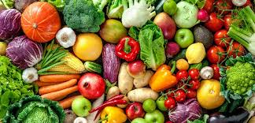

K-Lory
Une nouvelle façon de gérer votre prise de calories au quotidien.
La santé est souvent liée à l’alimentation , celui qui est en bonne santé c’est celui qui a une vie saine.
Une mauvaise alimentation engendre fréquemment des maladies courantes comme le diabète, le cholestérol ...
Il est donc utile et nécessaire de bien consommer et de pratiquer une activité physique régulière
C’est ce que nous vous proposons à travers notre site internet !
À vous de le découvrir …